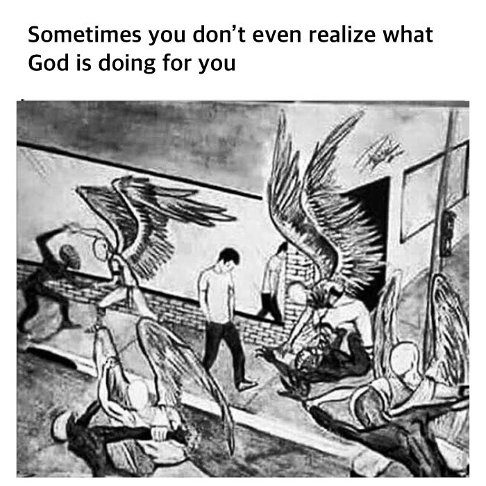

Proof of GodAt some level Ive always wanted to believe in god. But I spent childhood in the same mentality as most of my generation: I was angry at god. The usual question of, how could such immense suffering exist in parts of the world under this ‘all-caring god you speak of?. I was bored with the he has a plan (recieving this more often than youd think). But time passes, and you would rather be happy than right. I remember being a kid and finding out that religious people are happier on average, and deciding to be one of them.That sounds like a strange desire, because it is. The hurdles are obvious: I was too angry to believe in any sort of god that would needlessly cause such great harm in my life. Maybe religion could be found without a god? This turned me to Buddhism, which turned me to Be Here Now and Autobiography of a Yogi, or the video that made me buddhist: 4 ways of letting go. All of these sources spun out world-changing truths like a factory machine. I would read stories of great students of life, and try to deeply internalize the types of messages I would read. Things like, beyond the illusion of separation, there is only love, or we are the universe experiencing itself. To some these may be platitudes, but they were always thought provoking. I would walk around my house and see a potted plant and nod to it, imagining we were sharing a mutual understanding of the universes condition. It felt good, but it still wasnt enough. At some point I realized I was without my own experiences. I was craving my own proof of god, unsatisfied with everybody elses accounts. Funny enough, when it happened, I was too engaged to notice. Some time ago, I felt my love and appreciation for those around me grow. However, the distance between us did not change. Over time, we noticed a phenomenon happening extremely often: Somehow, over and over again: I would think of my friend and text them and then out of nowhere, three dots would stare at my hello. Both of us would start typing to each other at the exact same moment. This was not a pattern that repeated at a certain time of day, it would occur regardless of outside circumstances. In the beginning I pointed it out, so excited to see proof of my love. It happened so often, that eventually I would point it out just to shrug it off, then move forward with the conversation. What I experienced was not proof of god, but proof of a soul. My friends and familys' souls were interlinked with mine, almost to the point of sending messages to each other before materializing in the real world. Soon after I discerned the pattern, I noticed it everywhere. I would think of my boxing coach, moments before he texted me. I would remember an old friend, only to see my phone buzzing with a call from him. If you are anything like the atheist friends who I have brought this up with, you are saying, You know theres a number of reasons this could occur right? For example, hidden patterns like oxytocin release and matching timelines of desire, or student schedules coinciding, etc. I understand the point being made, which I will continue with. But this was proof enough for me. Maybe mystical experiences dont come in the form of blurry hallucinatory fugue states, but in our everyday experiences. It shifted my perspective, and now I see the man behind the curtain is just one step out of reach with every step. I am reminded of this image:  This brings me to the aformentioned point about how we use scientific explanation to disprove hard-to-explain concepts. Chaos theory alone can disprove the law of attraction, or my soul connection experience. Karma can be unexplained using basic analysis. For example, if a person steals often, the honest around them will fall away. They will surround themselves with criminals and be wronged themselves. The point is, anything created as a spiritual, religious, or alchemical concept, can be written off as a product of chaos theory, or hidden deterministic patterns underlying life. We cannot ignore everything and chalk it up to Occams razor. If god himself came down from the clouds and spoke into human minds to preach his words, there would still be atheists. Some would say, aliens must possess technology much more impressive than ours. The choice I had to decide was, what is more likely: Every deep meditator and believer of faith has been lying about their experiences and my soul connections were just chaos theory in effect, or people overvalue science and what is definable in their existing terms. My choice was easy. I have found what is proof enough for me of god. I found out recently about the concept of quantum entanglement. Funny enough, it is a good scientific explanation for the supernatural. Quantum entanglement is the phenomenon that occurs when a group of particles are generated, interact, or share spatial proximity in a way such that the quantum state of each particle of the group cannot be described independently of the state of the others, including when the particles are separated by a large distance. Despite our distance, we were still affected by one another. If souls exist, those gurus were probably telling the truth about everything else |